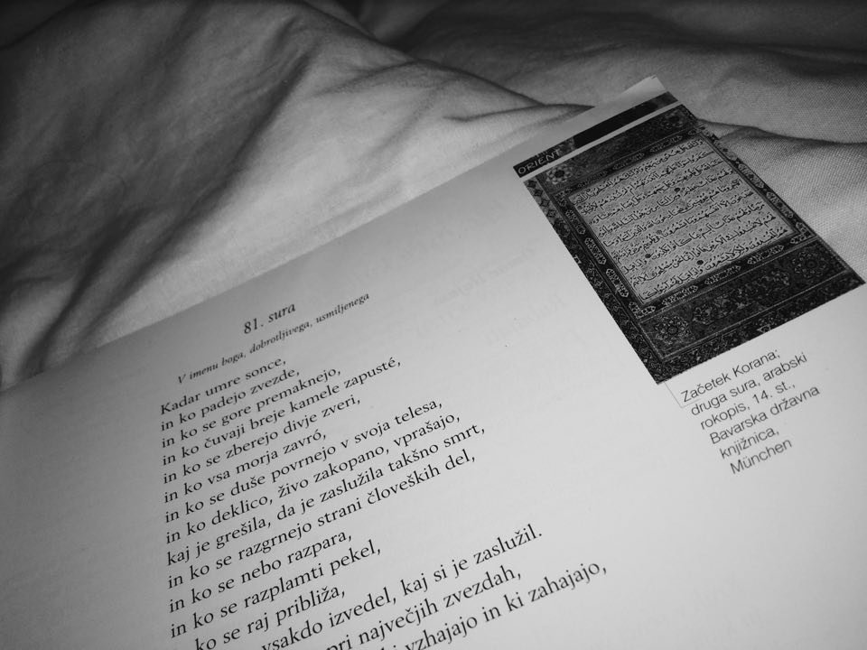

V Arabiji je v predislamskem času zaradi neenakosti med ljudmi prišlo do agresivnih želja po imetju. Plemenske družbe so izvajale grobe verske in družbene obrede. Moški so se lahko poročali s poljubnim številom žensk, saj so bile le-te njihova lastnina. Poročali so se lahko tudi z lastnimi sestrami, materami ali hčerami. Ženske niso imele nikakršnih dednih pravic. Že samo rojstvo hčere je pomenilo nenaklonjenost bogov, zato so jih pogosto, če jih niso mogli prodati za sužnje, žive zakopali.
